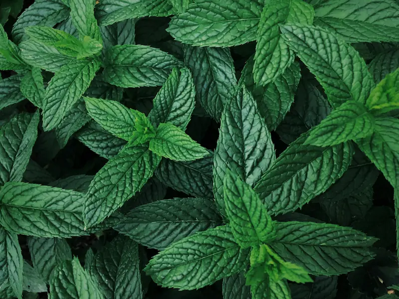
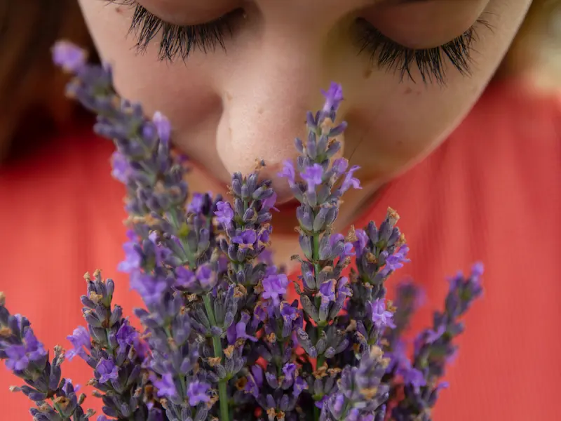

Are you looking to maintain your health naturally? Are you dealing with anxiety and stress? Do you have trouble sleeping? Or maybe you are trying to manage a chronic illness or fighting a cold. These and many other conditions can be addressed through your aromatic consultation. Here’s what to expect…
Hello my name is Michelle, thank you for visiting my site! I’m excited to share a little bit about myself. I have been interested in health and well being for as long as I can remember, and wanting to help others led me to become a massage therapist. I found joy in helping clients relieve pain, stress, and anxiety. To complement my therapy, I later became a certified reflexologist. Throughout my practice I have enjoyed incorporating essential oils in the treatment of my clients. I have seen not only their relaxing effects but also their ability to relieve pain. This led me to my training in aromatherapy, helping me to incorporate essential oils safely in many ways beyond massage therapy.
My passion for helping people... compelled me to further my education with comprehensive and in depth training to become a Clinical Aromatherapist and Aromatic Medicine Practitioner. I truly believe in the body’s natural ability to heal and how essential oils are valuable in supporting the process. I take a holistic approach to health and well being, looking at diet and lifestyle as well as how essential oils can assist the body in regaining balance.
Our unique body chemistry and lifestyle respond best to a personalized approach. Join me for your custom aromatic program, matching essential oils and herbs based on your individual constitution and needs. I look forward to getting to know you through our consultation!
Read More ↓No two people are alike, we are all unique. Our constitution and chemical makeup are all different. There is no one herb nor one essential oil that fits for everyone, or every occasion. Even when two people appear to present with the same condition, for example a headache, where allopathic medicine would prescribe the same painkiller for both people, in Aromatic Medicine we look at the individual. What is the cause of the headache? What type of headache is it? How does it manifest itself? Taking a more holistic approach to health and well being, looking at diet and lifestyle as well as how the essential oils can assist the body in regaining balance. With a more personalized approach, a custom aromatic program is worked up matching essential oils and herbs based on your individual constitution and needs.
Clinical Aromatherapy and Aromatic Medicine use the plant’s powerful and complex compounds to support the health and well being of your body. Many synthetic drugs are actually derived from a component of the essential oils of the plants, then synthesized in a lab. The downfall with the use of synthesized drugs is that it is a focused, singular approach to treating a condition. While that may sound good, that’s not really how disease works and is the reason why many pathogens become immune to these drugs. Essential oils, on the other hand, are multi-faceted and multi targeted. They are very complex molecules and are a powerful natural alternative to synthetic drugs, with little or no side effects. Due to the natural complexity of their chemical makeup, it is virtually unheard of for a virus or bacteria to become resistant to the essential oil.
Clinical Aromatherapy and Aromatic Medicine have proven to be beneficial when dealing with insomnia, migraines, respiratory conditions, digestive issues, PMS and menopause, muscular aches and pains, ADHD, wounds, burns, stress related conditions, anxiety, emotional conditions and much more. Even if you are in good health, it can help to strengthen your immune system by managing stress and maintaining good health. Many people have found it very beneficial when dealing with trauma, grief and loss, anger and other emotional issues.
The innate ability of essential oils to balance the body and bring it back into harmony is truly amazing. The plant's healing power, along with the incredible natural healing ability of our bodies, makes incorporating the safe use of essential oils and herbs into your healthcare and daily life very beneficial. Allow me to assist you in your journey to better health.
Have you ever given thought to what essential oils actually are? Well in short, essential oils are the plant’s chemical messengers. Plants attract or repel insects, fight off fungi, bacteria and other microbes, purify the air and communicate with each other. They do all of this via their chemical messengers – the essential oils. They are what give the plant its scent. Take for example Rosemary. If you were to pick the herb from your garden, rub it between your fingers and then smell your hand – that rosemary smell is in fact the essential oil from the plant.
 So how do these essential oils get from the plant into the bottle? Various parts of the plant are used - leaves, needles, grasses, seeds, flowers, fruit, roots, wood and even resin. Several different methods are used to extract essential oils from these parts of the plant. Steam distillation( the most common), cold pressed (for citrus oils), CO2 extraction and even solvent extraction to make the flower absolutes (Rose, Jasmine and so forth). These are the processes that separate the essential oil from the plant. With that being said, essential oils are complex and highly concentrated. For example, it takes 4-5 pounds of mint leaves to produce a ½ ounce (15ml) bottle of peppermint(mentha x piperita) essential oil. Just think about how many mint leaves that is!
It’s these volatile chemical compounds that we use in aromatherapy. We respect the potency and complexity of these oils as well as the healing power they bring to the table. We work with the body’s natural healing ability as well the essential oils ability to balance the body. But never forget the plant these essential oils came from. The next time you pick up a bottle of essential oil, take a moment to remember and appreciate the beautiful and aromatic plant that housed these wonderful chemical compounds which bring us so much joy. Appreciate these amazing aromatics.
Essential oils are at the heart of aromatherapy. These plant derived oils can be used to support our health and well-being through inhalation, diffusion, various methods of application to the skin, internally as medicine as well as natural cleaning products. Utilizing essential oils through inhalation has a profound effect on our nervous system. They have a direct impact on our limbic system - the part of our brain that is responsible for our emotions. Here are some of the positive effects that inhalation of essential oils can have on us:

Essential oils can also benefit the health of our skin as well as other systems of our body. The benefits of applying diluted essential oils to the skin include:
Essential oils are a wonderful natural alternative to all the synthetic products that are on the market today. Consider reaching for these amazing plant medicines as an alternative to over the counter drugs. Add a few drops of orange essential oil to your diffuser to lift your mood; or perhaps a few drops of rosemary essential oil to help you concentrate. Maybe your stomach feels a little uneasy or nauseous, reach for a bottle of peppermint essential oil and take a few deep breaths. In this way you will be unlocking the wonders of these aromatic plants.